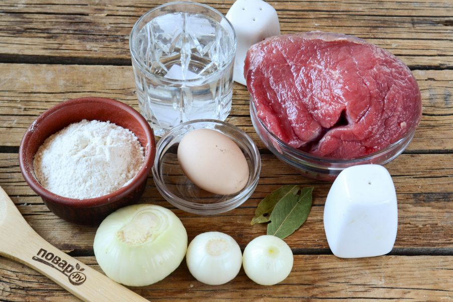
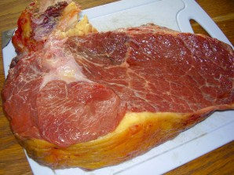
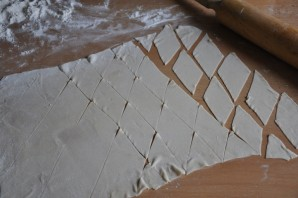
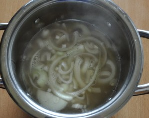
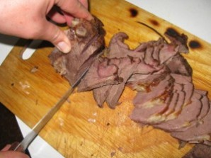
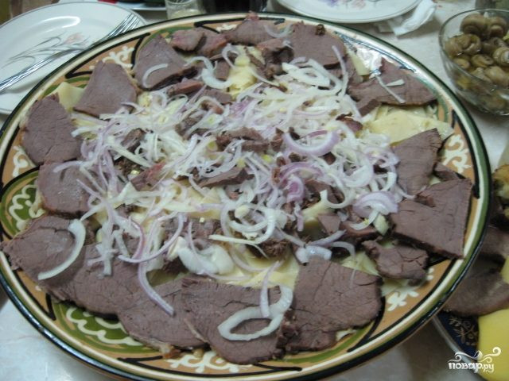

Бешбармак — национальное блюдо кочевых тюркских народов в Средней Азии. Термин «бешбармак» означает «пять пальцев», потому что кочевники раньше ели это блюдо руками. Бешбармак — это отварное, мелко нарезанное мясо, смешанное с вареной лапшой и приправленное пряностями с луковым соусом. Обычно подается в большом круглом блюде. У некоторых народов бешбармак подается с шурпой — отварным бульоном из баранины в пиалах, а в казахской кухне это блюдо готовится из конины. Однако в наше время люди приспособили бешбармак к своим собственным вкусам, используя говядину, баранину, курицу, а также мясо верблюда и даже рыбу. Тесто для лапши в бешбармак приготавливается просто: в рецепт входят мука, яйцо, соль, вода. В блюдо добавляют определенные специи, зелень и корнеплоды. Пошаговые рецепты приготовления с фотографиями — идеальное пособие для тех, кто хочет приготовить вкусный бешбармак. Бешбармак — национальное блюдо кочевых тюркских народов в Средней Азии. Термин «бешбармак» означает «пять пальцев», потому что кочевники раньше ели это блюдо руками. Бешбармак — это отварное, мелко нарезанное мясо, смешанное с вареной лапшой и приправленное пряностями с луковым соусом. Обычно подается в большом круглом блюде. У некоторых народов бешбармак подается с шурпой — отварным бульоном из баранины в пиалах, а в казахской кухне это блюдо готовится из конины. Однако в наше время люди приспособили бешбармак к своим собственным вкусам, используя говядину, баранину, курицу, а также мясо верблюда и даже рыбу. Тесто для лапши в бешбармак приготавливается просто: в рецепт входят мука, яйцо, соль, вода. В блюдо добавляют определенные специи, зелень и корнеплоды. Пошаговые рецепты приготовления с фотографиями — идеальное пособие для тех, кто хочет приготовить вкусный бешбармак. Знакомство с бешбармаком. Вернуться на главную
| Продукты | Количество |
|---|---|
| Конина | 1,5кг |
| Мука | 2-3 стакана |
| Яйца | 2 штуки |
| Зелень | 50 г |
| Соль | 1 ложка |
| Перец черный молотый | 1-2 щепоток |
| Лук репчатый | 2-3 штук |
| Лавровый лист | 1-2 штук |
|  | |
Подготавливаем мясо для варки. Моем, разрезаем на куски. Укладываем в кастрюлю и заливаем водой так, чтобы оно было полностью покрыто. Ставим варить. Когда закипит - снимаем пену, уменьшаем огонь и варим часа 3. Примерно за пол часа до готовности добавляем соль, перец, одну луковицу и лавровый лист. Во время варки необходимо постоянно снимать с поверхности бульона жир.
Достаем тесто из холодильника и раскатываем тонким слоем. Толщиной примерно 2-3 мм. Нарезаем на ромбики, квадратики, треугольники - кому как нравится. Даем слегка подсохнуть.
Чистим репчатый лук и нарезаем кольцами или полукольцами. Перчим, солим и заливаем горячим бульоном. Закрываем крышкой и даем постоять примерно минут 10
Достаем готовое мясо и нарезаем его тонкими пластинками.
В кипящий бульон опускаем нарезанное тесто и варим минут 6-8.

На подогретое блюдо выкладываем сваренное тесто, затем выкладываем кусочки мяса и поверху выкладываем лук. Перед подачей посыпаем зеленью.
